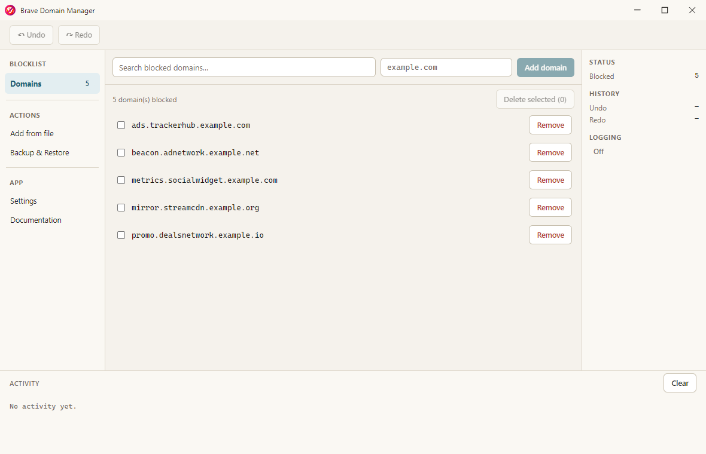
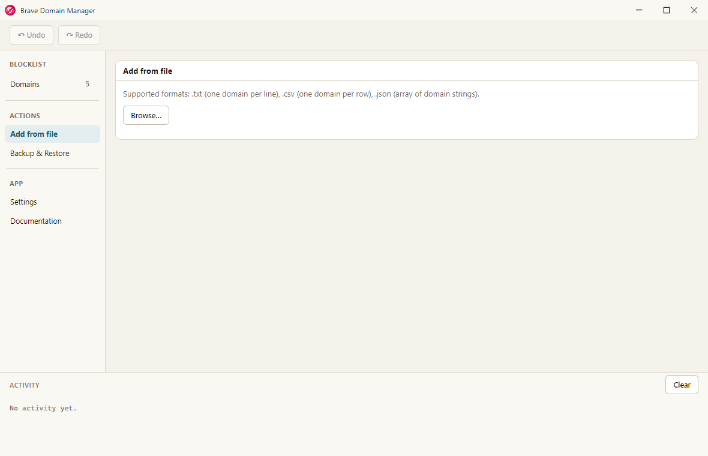
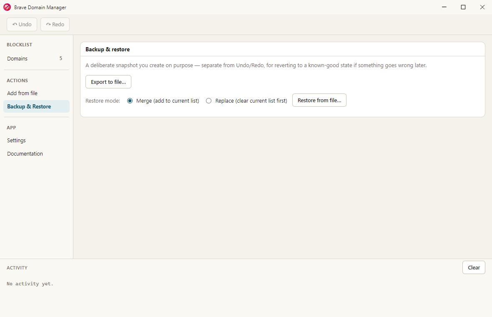
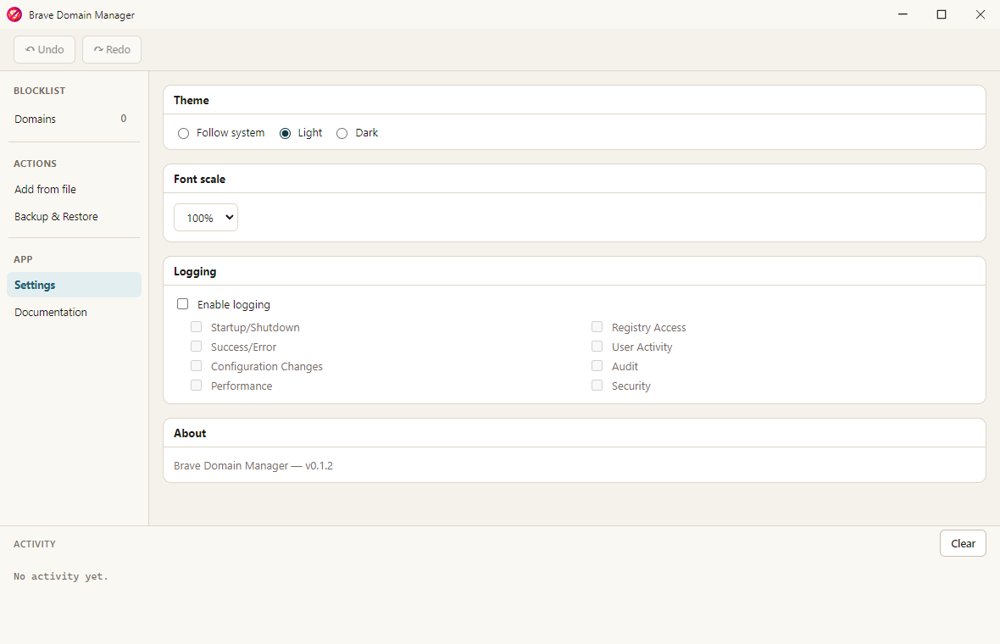
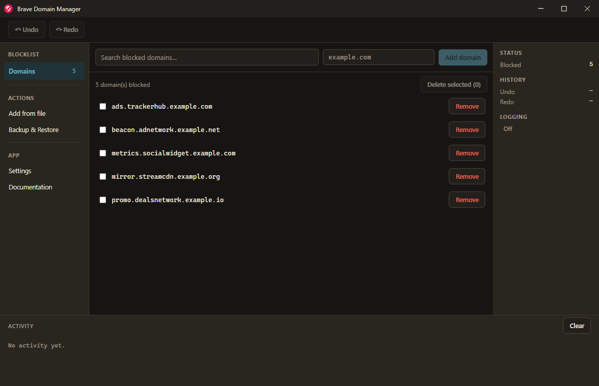

Manage Brave's domain blocklist without touching regedit.
Brave supports blocking specific domains via a machine-wide policy stored in the Windows registry, but Brave itself has no UI for managing that list. Brave Domain Manager fills that gap — add, remove, search, undo/redo, and back up your blocklist from a normal desktop app.

Content filtering
Block sites at the browser-policy level, independent of any single profile or extension.
Bulk management
Import or export whole lists of domains in one batch instead of one at a time.
Safety net
Every change is undoable, and you can export a snapshot to restore later if something goes wrong.
Installation
Windows 10/11, 64-bit
Download & install
- Get the latest installer from the Releases page —
brave-domain-manager-<version>-setup.exe. - Run the downloaded
.exe. Windows SmartScreen may warn that the app is unrecognized, since the build isn't code-signed. Choose More info → Run anyway to proceed. - Follow the installer prompts — you can choose the install directory, and a shortcut is added to the Start Menu.
Building from source
Developers can build the app directly instead of using a pre-built installer. See the main repository README for build instructions.
Getting Started
Launch Brave Domain Manager from the Start Menu. The app opens directly to the Domains view, showing your currently blocked domains.
Managing Domain Entries
Adding a single domain
- Type a domain into the field at the top of the Domains view — format
[subdomain.]domain.tld, e.g.example.comorads.tracker.example.com. - Click Add domain (or press Enter).
- Approve the UAC prompt. The domain is written to the registry and appears in the list immediately.
Adding domains from a file

- Under Add from file, click Browse….
- Choose a
.txt(one domain per line),.csv(one domain per row), or.jsonfile (an array of domain strings). - Each entry is validated and staged before anything is written — invalid entries and domains already on your blocklist are flagged with a reason and skipped automatically.
- Click Add N valid domain(s) to commit the batch. This triggers exactly one UAC prompt for the whole batch, not one per domain.
Removing domains & searching
Click Remove on a single row, or check multiple boxes and click Delete selected to remove several at once. The Search blocked domains… field does fuzzy matching, so minor typos or partial names still find the right entry.
Undo & Redo
Every add or remove is undoable:
- Use the Undo/Redo buttons in the toolbar, which show what action they'd affect.
- Or use Ctrl+Z / Ctrl+Y (Ctrl+Shift+Z also works for redo). These are ignored while a text field has focus, so they never interfere with normal text editing.
History is per-session — it resets when you close the app. If the registry changes outside the
app between an action and its undo (another instance of the app, or a manual regedit
edit touching the same entry), the app detects the conflict and refuses to overwrite it rather
than silently clobbering the unrelated change. For anything you want to keep permanently, use
Backup & Restore instead.
Backup & Restore

- Export to file… saves your current blocklist to a JSON file you choose.
- Restore from file… loads a previously exported (or hand-written) JSON snapshot, in one of two modes:
- Merge — adds the snapshot's domains to your current list; anything already blocked is skipped.
- Replace — clears your current list first, then restores exactly what's in the snapshot.
Settings

- Theme — Light, Dark, or Follow system.
- Font scale — 70%–140%, applied immediately across the whole app.
- Logging — disabled by default. When enabled, choose which categories to record (registry access, user activity, configuration changes, audit, security, performance, startup/shutdown, success/error). Logs are written to your user data folder and rotate daily.
Updates
The app checks for a new version once, on launch, and downloads it in the background if one is found — you'll see a quiet "Update available" indicator at the bottom of the sidebar. Once it's finished downloading, that indicator becomes "Update ready"; clicking it shows what changed before you commit to anything. Installing restarts the app.
Dark theme
Switching Theme to Dark (or Follow system on a dark-mode machine) restyles the whole app immediately:

Troubleshooting
"Windows protected your PC" (SmartScreen)
This is expected for an unsigned build — there's no publisher certificate. Choose More info → Run anyway. If you'd rather verify the source first, see Building from source.
A UAC prompt appears when I add or remove a domain
Expected, by design — writing to the registry requires administrator rights, so the app requests elevation only for that specific action, not for the whole app. Declining the prompt cancels just that one add/remove.
My domain was rejected as invalid
Domains must match [subdomain.]domain.tld — for example example.com or ads.tracker.example.co.uk. Leading http://, https://, and www. are stripped automatically, and anything after a / is ignored, so pasting a full URL still works.
Undo/redo says it can't complete an action
This means the registry changed outside the app since that action was recorded (see Undo & Redo) — the app refuses to overwrite data it didn't create, rather than failing silently. Check the current state of the entry in question and adjust manually if needed.
The Documentation tab won't load in the app
If you're offline, the embedded copy of this site can't load. The app shows a retry option and a link to open this page in your regular browser instead.
License
Brave Domain Manager is licensed under the MIT License.